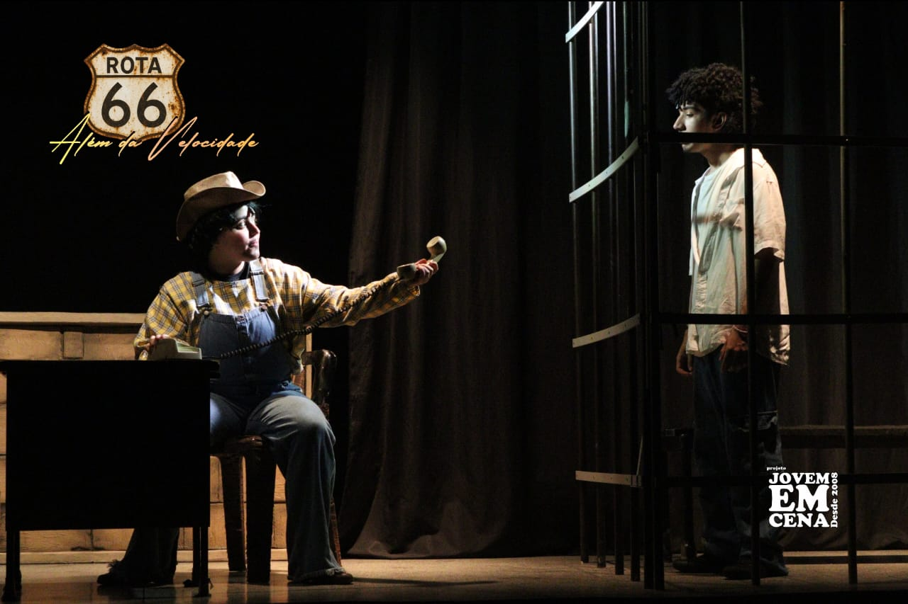
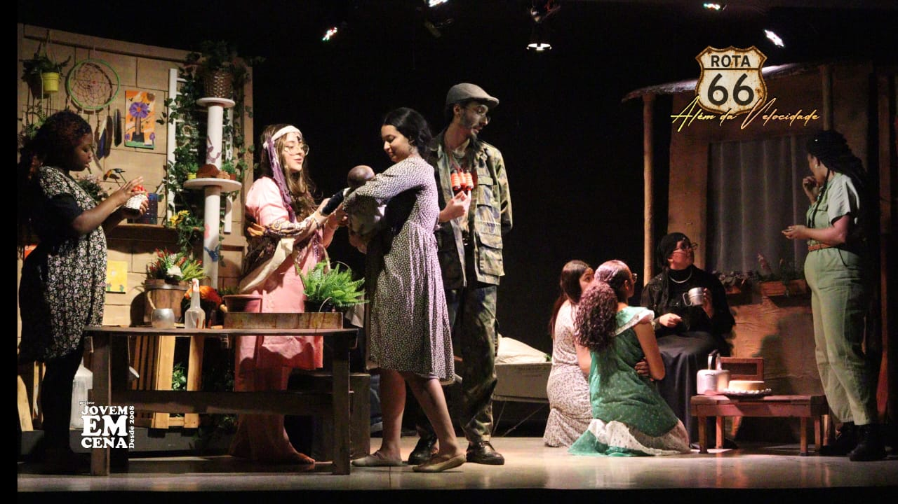

O começo da peça se passa na cidade grande, através de uma corrida na qual conhecemos o Relâmpago McQueen, o protagonista que irá passar por altos e baixos durante 120 minutos.
A peça aborda o egoísmo e a imaturidade do piloto em ascensão; após uma festa com bebidas e muitas garotas, Relâmpago McQueen pega a estrada, contudo, algo inesperado acontece e ele vai parar em Radiator Springs, uma cidade esquecida pelos demais, mas que carrega consigo motivações e moradores para mudar, mostrando que ainda tem tempo.
Nessa cidade, temos Sally, a advogada do vilarejo que luta pelo que é justo. Will, um jovem com antecedentes criminais, mas que se arrepende. Marisol, uma mulher com seu filho, imigrantes, que sonhou uma vida melhor nos Estados Unidos, mas que sofreu muito mais do que se imaginava. Grace, uma mulher com uma filha, que trabalhava em uma empresa que ia contra seus ideais e saiu, sentindo que fez a coisa certa. Flo, uma mulher que sofreu violência doméstica, fugiu do marido e se reencontrou em Radiator. Mate, o personagem que traz um respiro após as diversas cenas sobre o passado. Doc Hudson, o prefeito e ex-piloto de corrida que tinha o mesmo ego que McQueen, mas que não conseguiu mudar a tempo. Sargento, o personagem que sempre está de olho em tudo e todos e Agnes, uma senhora com Alzheimer e sem parentes próximos.
Rota 66 e as outras peças, se torna algo muito mais do que uma simples peça: trata sobre assuntos que afetam a grande maioria da sociedade. É um teatro que te faz desacelerar, pensar sobre a vida e tomar a frente novamente.
E assim como Radiator Springs, Jovens em Cena (@projetojovensemcena) é a “cidade do acaso”, o lugar que faz as pessoas se relaxarem, se tornarem elas mesmas. É um refúgio artístico e afetivo, que dá uma pausa na vida frenética fora dos palcos.

Por isso, sempre que possível vejam as peças e verifiquem o catálogo. Elas são gratuitas e ocorrem em alguns finais de semana, na Escola Antônio José Leite. As pessoas escolhem o lugar na hora e chegam com uma hora de antecedência.
Vocês verão as atuações mais lindas, canções mais calmas e interações até com o público.
Matéria por ✍️ @Dino_raaaawr